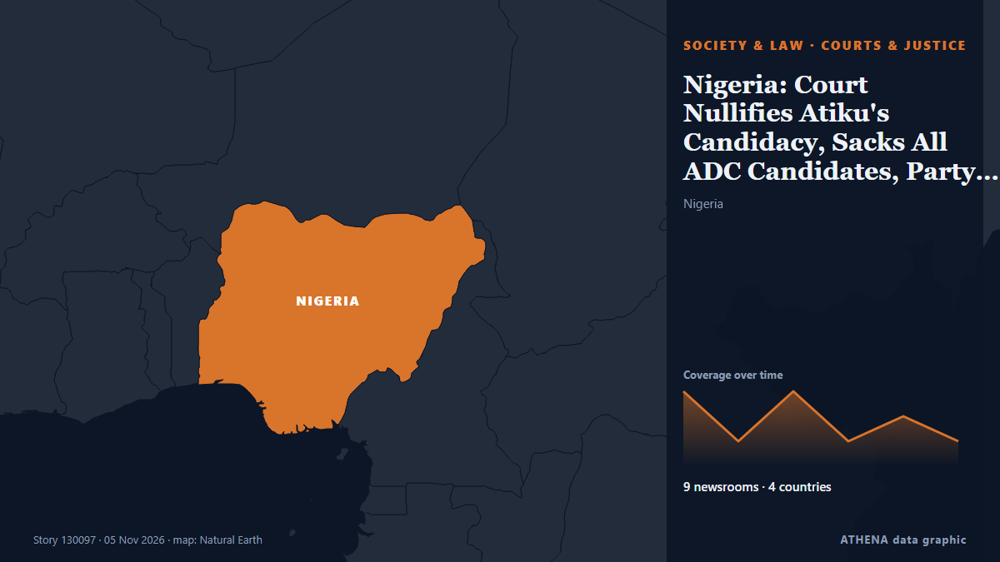

Society, Law & Public Policy
SponsoredPresented by  Cybernetics and Artificial Intelligence Lab Welcome to the Cybernetics and Artificial Intelligence Laboratory, established at the Department of Business Administration of the National and Kapodistrian University of Athens. The lab is headed by Professor Dimitrios Thomakos. The lab aims to do research that can be published in top venues. Our research uses tools and methods of Artificial Intelligence, and lies in the following areas: - Forecasting - Decision making - Cyber security - Finance We are always looking forward to collaborating with exceptional students!
Cybernetics and Artificial Intelligence Lab Welcome to the Cybernetics and Artificial Intelligence Laboratory, established at the Department of Business Administration of the National and Kapodistrian University of Athens. The lab is headed by Professor Dimitrios Thomakos. The lab aims to do research that can be published in top venues. Our research uses tools and methods of Artificial Intelligence, and lies in the following areas: - Forecasting - Decision making - Cyber security - Finance We are always looking forward to collaborating with exceptional students!

Courts & justiceNigeria: Court Nullifies Atiku's Candidacy, Sacks All ADC Candidates, Party Leadership
[Premium Times] The judgement, if upheld by the higher courts, means the ADC, a major challenger to the ruling All Progressives Congress (APC), is barred from fielding candidates in the upcoming… from AllAfrica
| 23 Oct | 188 |
|---|---|
| 24 Oct | 120 |
| 25 Oct | 131 |
| 26 Oct | 319 |
| 27 Oct | 310 |
| 28 Oct | 291 |
| 29 Oct | 261 |
| 30 Oct | 300 |
| 31 Oct | 153 |
| 1 Nov | 198 |
| 2 Nov | 315 |
| 3 Nov | 264 |
| 4 Nov | 226 |
| 5 Nov | 125 |
France workers strike, march for ‘dignified wage’
Striking workers marched across France against the rising cost of living on Thursday, with hundreds of thousands of people expected to take to the streets nationwide in a new escalation following… from Vanguard
Hong Kong activist Joshua Wong given another 10 years
HONG KONG: Joshua Wong was one of the poster boys of Hong Kong’s pro-democracy movement, seen as a thorn in Beijing’s side as it seeks to stamp its authority on the territory. from New Straits Times
Top UN court to rule Nov 19 on Myanmar/Rohingya genocide case
The ICJ has spent seven years considering allegations that Myanmar's brutal repression of the Rohingya violated the 1948 UN Genocide Convention. from Free Malaysia Today
Helsinki court sentences 2 Fitburg crew members to prison over subsea cable damage
Russian captain receives 3.5-year term, Azerbaijani boatswain sentenced to 2 years, 10 months. from Anadolu Agency (English)
The Leader of a German Conservative Party Is Found Dead at a Berlin Hotel
Hubert Aiwanger, leader of a conservative party influential in Bavarian politics, has been found dead in a Berlin hotel. from ABC News (International)
House fire in Brooklyn kills 6 and injures 7, more than 200 firefighters respond
NEW YORK, Nov 5, (AP): Six people died in a fire that barreled through a two-story home in New York early Thursday and seven others were injured, including three firefighters, t... from Arab Times
Serbia detains police officers over alleged use of force against protesters
BELGRADE, Nov 4 - Serbian authorities detained nine active police officers and one former officer on Wednesday for allegedly using excessive force against detainees during anti-corruption protests… from The Straits Times
Ukraine dismisses 2 senior security officials amid probe into criminal network
Anti-corruption agencies allege law enforcement officials protected fraudulent call centers, drug trafficking and counterfeiting operations. from Anadolu Agency (English)
French Strike Fills Lyon With Up to 55,000
Lyon’s strike march drew 30,500 by official count and 55,000 by the union’s, under a route ban, with clashes at its edges and 270,000 out nationwide. from The Rio Times
France faces new protests as Macron seeks to prevent repeat of October unrest
Hundreds of thousands of protesters are expected to march through French cities and public... from The Citizen (Tanzania)
Mother of Ghanaian teen killed in New York heads to US funeral after Trump grants visa
ACCRA, Nov 4 - The mother of a Ghanaian teenager who was fatally shot in New York departed for the United States on Wednesday after President Donald Trump intervened to grant her a visa to travel to… from The Straits Times
Marine dies during training incident in Okinawa
A U.S. Marine died during a training incident in Okinawa, Japan, on Tuesday, the U.S. military announced Wednesday morning. from The Hill
2 dead in shooting at Citibank complex in U.S. Florida: authorities
Sheriff Chad Chronister said the shooting is believed to be ‘a targeted incident’ from The Independent
Secret police files released in Hungary, 37 years after fall of communism
Critics say the move comes too late, that the files themselves are incomplete, and the move risks sowing division and causing unnecessary anguish. from BBC News
US to deport 150 Afghan immigrants back to Afghanistan: US media
Trump administration plans to deport more than 150 Afghans via Pakistan, despite warnings from advocacy groups that they could face danger under Taliban rule. from The New Arab
Reddit calls Australia’s under-16 social media ban ‘inept’ in court
Reddit has asked Australia’s High Court to strike down the country’s world-first ban on under-16s holding social media accounts, arguing that the law is unconstitutional. from The Next Web
Google will let schools turn off AI, but they may also lose Search
New York — Google is rolling out new controls for schools to limit students’ access to the company’s AI tools. from Egypt Independent
International News: French High School protests resume on smaller scale
By Zoila Palma: Protests by French high school students resumed on Monday, but on a significantly smaller scale than in previous weeks, as students returned from a two-week school break, Reuters… from Breaking Belize News
Dozens arrested outside Supreme Court hearing on Palestine Action ban
The banned UK group, which targets Israel's war machine, has inspired activists in Europe and beyond. from Al Jazeera English
Monfils gives emotional farewell in Paris with wish for daughter Skai
PARIS: Gael Monfils turned his tennis farewell into a message for his young daughter Skai on Tuesday, telling her he hoped she would one day play in Paris as he thanked fans in the French capital… from Business Recorder
UK police arrest 25 Palestine Action supporters outside court
Defend Our Juries has staged the protest today in a call for the government to lift the terror ban on the proscribed group. from Evening Standard (London)
Indonesia’s president sacks chief of staff over alleged wiretapping
Listyo Sigit Prabowo was dismissed a day after his arrest alongside two senior police officers on suspicion of illegally tapping the phones of the president and other officials. from Free Malaysia Today
Bangladesh garment factories close as workers clash with police in pay protests
Police have clashed with garment workers demanding higher minimum wages in Bangladesh, where days of protests have disrupted an industry that employs about 4 million people. from ABC News (International)
Spanish transport minister resigns days after deadly train crash
At least 69 people were killed and dozens injured in the collision south of the capital, Madrid. from BBC News
US Judge Temporarily Blocks Deportation of More Than 150 Afghan migrants
A federal judge in New York has temporarily blocked the Trump administration from deporting Afghan nationals to Afghanistan or Pakistan, delaying a planned removal operation involving more than 150… from Khaama Press
Search and rescue operation in Komyshuvakha: 38 more people may be trapped under rubble, 59 remain missing
The bodies of 31 people killed in a Russian airstrike have been recovered from the rubble in Komyshuvakha, Zaporizhzhia region. from Ukrinform (English)
Mother of 15-year-old Ghanaian shot dead in New York demands justice
The mother of 15-year-old Ghanaian student Javits Frimpong, who was fatally shot while walking to school in New York, will be granted a visa to travel to the United States following an intervention… from MyJoyOnline
Poland: Dispute Over Constitutional Court Escalates
Poland’s dispute over the constitutional court has escalated, with President Nawrocki blocking the swearing-in of five newly elected judges. from Kyiv Post
Woman, 20, identified as co-pilot in plane that crashed in Florida killing 9 people, got her pilot's licence in high school
Family of four, two close friends and nanny also died in crash as pilot identified as 55-year-old Jeff Gregory Family members on Monday identified a young Florida pilot as one of nine victims of a… from The Guardian
Spain's transport minister resigns after 69 killed in train crash disaster
Dr Marta Shahbazi was one of 69 people killed in the devastating crash last week. from Birmingham Mail
1 Dead, 2 Injured After 2 Helicopters Collide On Mount Everest
Two helicopters collided near Mount Everest during Nepal's peak trekking season, killing an Indian tourist and injuring passengers and pilots. from Simple Flying
Famous man loses bid for injunction to stop reporting of allegations
The man brought legal action against Independent Television News (ITN) and Guardian News and Media, publisher of The Guardian. from Evening Standard (London)
Czech public media workers go on strike over a government plan to overhaul their funding
Czech public media workers went on a one-day strike on Tuesday to protest a government plan to overhaul how public broadcasters are funded, legislation that many say would threaten their independence. from The National Herald
Poland Deploys Counterterrorism Police Near Russia Border
Poland has deployed additional police, including counterterrorism units, in the Warmian-Masurian and Podlaskie regions after receiving warnings of possible sabotage near the Russian exclave of… from Kyiv Post